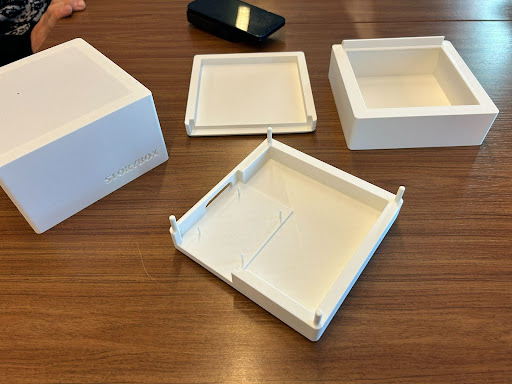
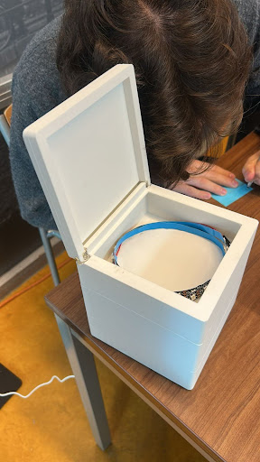
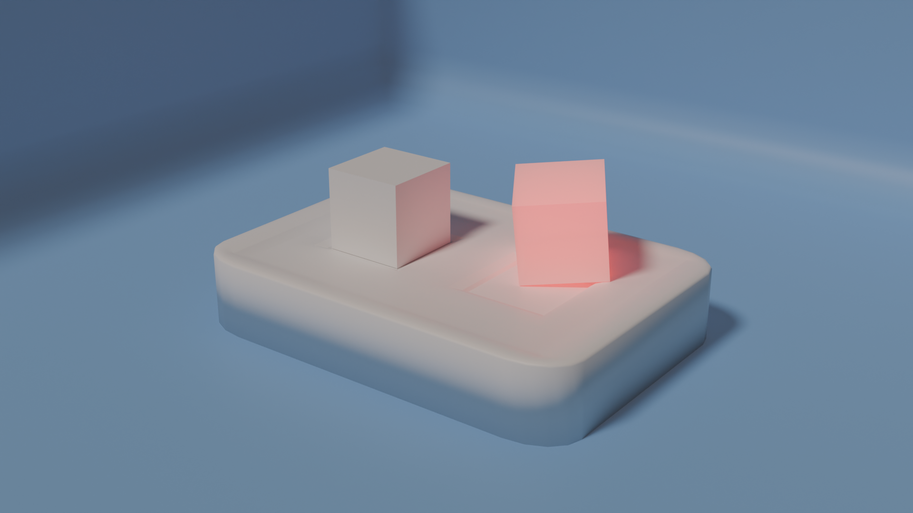
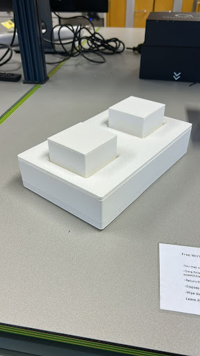
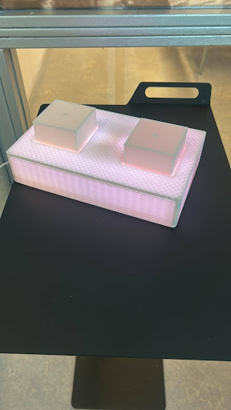

Playful intelligence was a speculative design project focused on building a voice
agent for children. The goal was to extract current trends, extend them to the near future,
and create an interface for a product that could exist in the prospective world.
In this 2-month long university project, I worked as an interaction designer and a hardware
engineer. I was responsible for conceptualizing the interaction model and user experience, while also
building the physical prototype including electronics integration and LED feedback system.
Ideation
We began by considering a current negative behavior the team sees in children, and convert it
into something positive. For this challenge, we looked at the current overconsumption and
over-dependence that children experience with technology. Specifically, how technology learned
to target children, and how it affects a child's development.
The team compared this to our own experience growing up, where access to technology was
limited. Instead, our development was the cause of not only influences from real life, but
the stories we heard and saw when we were younger. Experiencing imagination was a deeply
formative experience, because it was meant to fill in the gaps in a story with our own
thoughts and emotions.
Our ideation lead us to conceptualizing how artificial intelligence can be a servant of
imagination, creating with a person rather than for a person.
Co-Creation Workshop
While the team's intuitive approach to the problem seemed reasonable, we wanted to validate
our design brief by hosting a workshop alongside stakeholders. A big focal point of the
project was Participatory Design, and how to ground concepts in functionality. Beyond
understanding what the form factor should be, the workshop was an opportunity to learn how
children currently interact with AI, and why it might need change.
I facilitated a co-creation workshop with 4 stakeholders with the
following plan:
A brief icebreaker, where we asked participants to share a story about their favorite toy as children
A storyboard session centered around capturing noticed child behaviors with technology and their concerns as stakeholders
A role-play scenario, where stakeholders played a child and a voice agent
An Insights wrap-up, which provided notes with actionable data for further refinement of ideas.
The outcomes of this workshop were that stakeholders acknowledged the increasingly concerning
issues regarding current tech standards for children. One stakeholder commented: "Children
are spectators. They experience life as a process done to them." They further reflected that
interaction with the world has migrated to a digital environment, making it isolating.
During the role-play, the group found that their interaction with an "artificial intelligence"
were lead primarily by curiosity, pretending to want to learn about the world around them.
After role playing, stakeholders found themselves advocating for AI to be a complement to
children development and, while expressing hesitancy, they said that it could be a valuable
tool for education and nurture.
Wrapping up, the group laid down the foundations for the project. They wanted something
that protected children's curiosity, creativity, and autonomy. Relating to their previous
experiences during the role-play, they expressed the desire for a voice agent that only
works while children are actively engaging it.
Prototype
The first iteration in the project was a box that would sit on a table and would narrate
stories when it was open. As an interaction designer, I focused on how the child
should interpret a system, and how to protect their autonomy.
When building the physical prototype, we opted to use LEDs in box to give system status.
When it was listening, the box would pulse gently, informing the user that it was expecting
input. When it was narrating a story, it was a solid color. Finally, a top cover was fitted
on the box, so that when opened it would spring to life, and remain asleep if it was closed.


After a round of feedback, we were made aware that there was a product currently on the
market that was nearly identical to ours, without voice interaction capabilities. Other
feedback expressed confusion with the process of interacting with the prototype.
The feedback ultimately meant that we would have to come up with a different approach.
Final Version
There was some good that came out of the feedback session. One tester said that they
would have liked a material way of interacting with the project. With this in mind,
we redesigned the concept to also addressed the physicality of our project.
We took inspiration from figurines and dolls, and created a concept that was based on
characters, instead of a central narrator.

We kept the boxy form factor, because we found that it was easier to map characters
onto an object if the object was very minimal. A box could be a knight, an astronaut,
or a dog. But now, the boxes could be picked up and played with physically. We also kept
the LEDs as the primary indicator, but now, when they talked, the LEDs could light up
independently, making the interaction between characters richer.
The final prototype featured two 3D printed boxes
unofficially called Salt and Pepper, and the base on which
they would sit. There was lights inside of the base, so that it would look like a night
light, and when the boxes would be picked up, they would light up. For the noisy
environment of the presentation room, we opted to use bluetooth headphones from which
the user would talk to the machine running a small AI model fine-tuned to make stories
with 2 characters and user input.


Reflections
This project taught me valuable lessons in speculative and participatory design,
especially in facilitating co-creation workshops and translating stakeholder insights
into design requirements.
On the technical side, I gained hands-on experience with hardware prototyping, learning
the fundamentals of battery chemistry, wireless communication protocols, and integrating
AI models with physical interfaces.
What I'd do differently: Looking back, I would focus more on creating a
realistic, implementable product. I felt really connected to this project, and would
love to continue it's development. Had I given certain details more thought, I think it
could have been a potentially viable product concept.